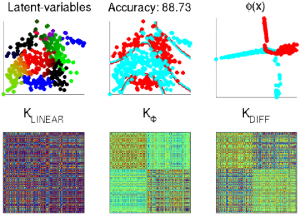

A C++ implementation with a MATLAB © interface of the Multiclass Latent Locally Linear - ML3 - Support Vector Machine (Fornoni et al., ACML 2013), an efficient non-linear classifier based on a latent SVM formulation.

ML3 can learn complex decision functions (traditionally given by kernels) through the use of locally linear decision functions. Differently from kernel classifiers, ML3 makes use of a set of linear models that are locally linearly combined (for each sample and class) to form a non-linear decision boundary in the input space. Thanks to the latent formulation, the combination coefficients are modeled as latent variables and efficiently estimated using an analytic solution.